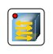

Switch
The network switch — the device intended for connection of several sites of a computer network within one segment.
Unlike the hub which extends the traffic from one online unit to all the rest, the commutator transfers given only to directly receiver.
It raises productivity and safety of a network, saving other segments of a network of necessity (and possibilities) to handle the data
which it did not intend.
Operation principle.
The commutator stores the table in which correspondence of the MAC-address of the site to commutator port is underlined in memory.
At commutator inclusion this table is empty, and it works in a training mode. In this mode the data arriving on any port is transferred
to all other ports of the commutator. Thus the commutator parses frames and, having defined the host-remailer MAC-address, brings it in
the table. Subsequently, if on one of commutator ports the frame intended for a host which MAC-address already is in the table this frame
will be transferred only through the port specified in the table arrives. 
If the host-receiver MAC-address is yet known, the frame will be duplicate on all interfaces. In due course the commutator builds
the complete table for all ports and as a result the traffic is localised.
Such sort has the commutator in our program. It fulfils all functions described above.
the device has a possibility to
look the switching table.